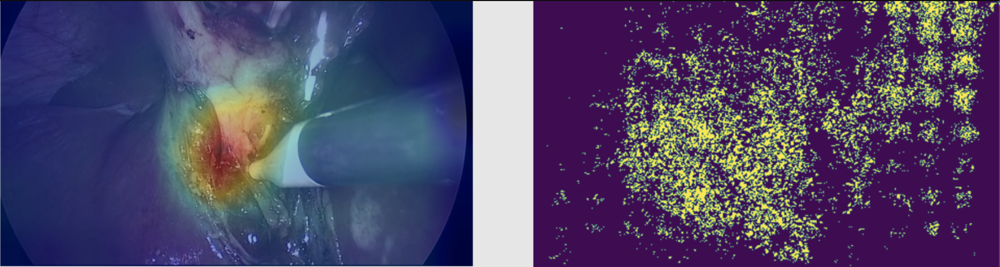
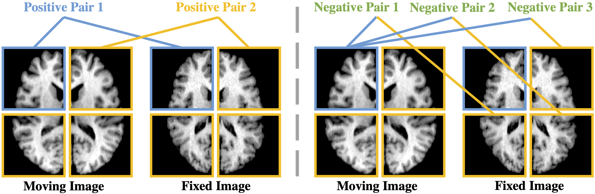
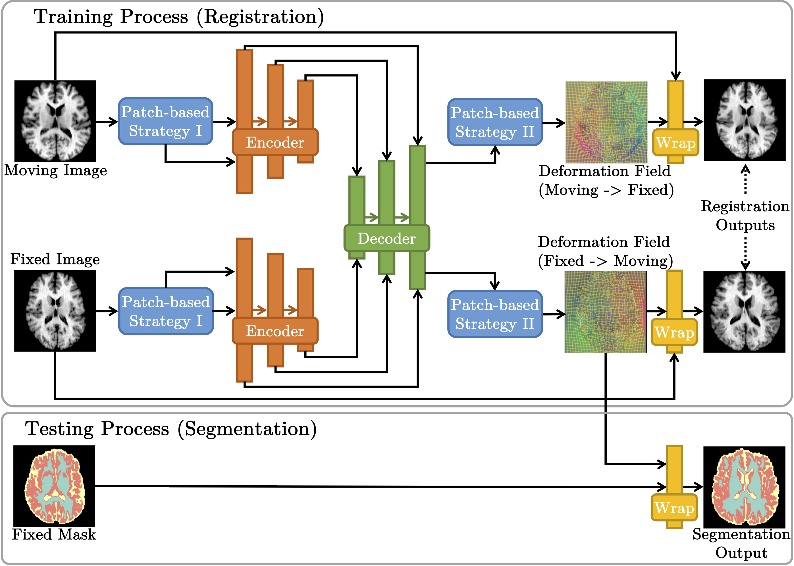
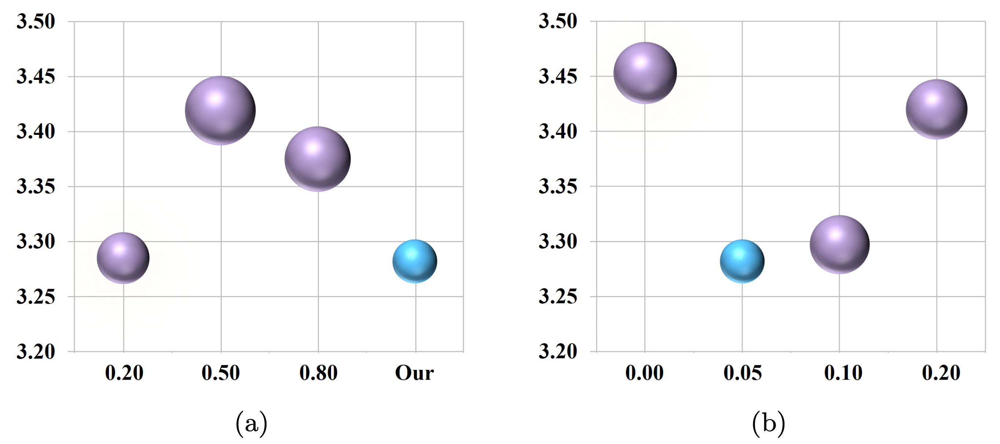
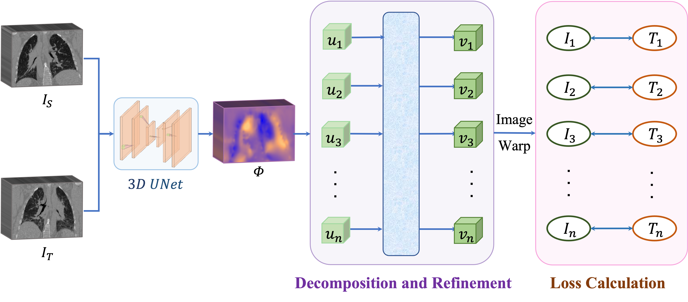
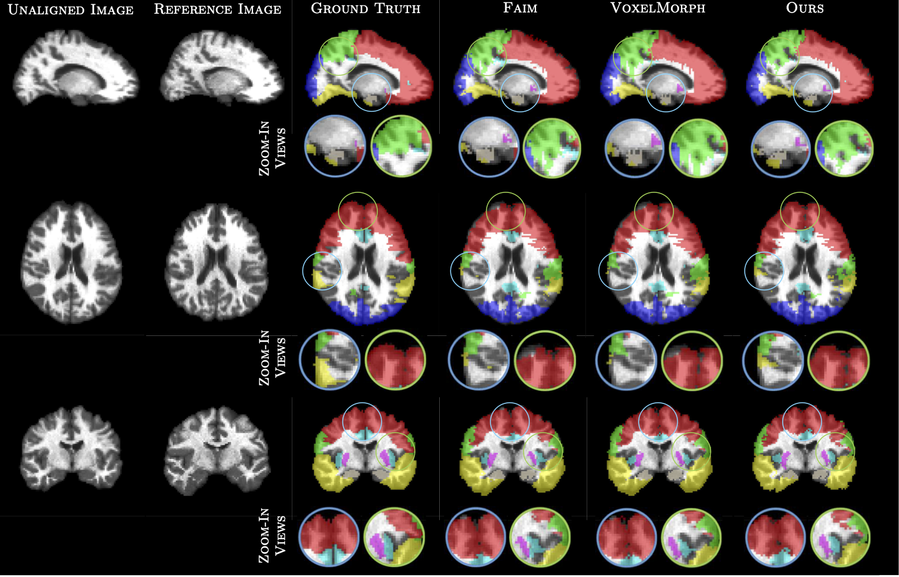

Lihao LiuPh.D. Candidate Cambridge Image Analysis Group
|
 |


Biography
I am a Ph.D. candidate in Cambridge Image Analysis Group (CIA) and Centre for Mathematical Imaging in Healthcare (CMIH) at University of Cambridge. I am working with Carola-Bibiane Schönlieb and Angelica I. Aviles-Rivero, and Pietro Liò. Before that, I received my M.Phil. degree from Dept. of Computer Science and Engineering (CSE), Chinese University of Hong Kong, under the supervision of Prof. Pheng-Ann Heng, and my B.Eng. degree from Dept. of Software Engineering, Chongqing University.
My research interests include Medical Image Analysis and Video Understanding. Specifically, I focus on using Machine Learning techniques to solve unsupervised medical image registration and segmentation tasks. Besides, I am also working on surgical video processing, and video content understanding tasks.
News
- [06/2022] Our challenge method paper is accepted on MIUA'2022, and win the Merit NVIDIA Paper Award!
- [05/2022] Two papers are accepted on WBIR'2022.
- [03/2022] We win the 4th place on the grand challenge CoNIC'2022.
- [03/2021] I will join Microsoft Research Cambridge as an intern to work on self-supervised cross-modality problems.
- [06/2020] I pass my M.Phil. thesis oral defense, and will join Cambridge Image Analysis group as a Ph.D. student!
- [01/2020] Our paper on supervised 3d brain segmentation is accepted at IEEE Transactions on Medical Imaging (TMI).
- [07/2019] Our extended paper on lung nodule analysis is accepted at IEEE Transactions on Medical Imaging (TMI).
- [06/2019] Our paper on unsupervised 3d brain image registration is early accepted at MICCAI'2019!
- [08/2018] Our paper on lung nodule analysis is accepted at MICCAI-DLMIA'2018.
Publications

|
SCOTCH and SODA: A Transformer Video Shadow Detection Framework Lihao Liu, Jean Prost, Lei Zhu, Nicolas Papadakis, Pietro Liò, Carola-Bibiane Schönlieb, and Angelica I Aviles-Rivero. Under Review. |

|
TrafficCAM: A Versatile Dataset for Traffic Flow Segmentation
Zhongying Deng, Yanqi Chen, Lihao Liu, Shujun Wang, Rihuan Ke, Carola-Bibiane Schonlieb, and Angelica I Aviles-Rivero.
Under Review.
[paper] |
|  | Why Deep Surgical Models Fail?: Revisiting Surgical Action Triplet Recognition through the Lens of Robustness Yanqi Cheng, Lihao Liu, Shujun Wang, Yueming Jin, Carola-Bibiane Schönlieb, Angelica I. Aviles-Rivero. Under Review. |
|  |
PC-SwinMorph: Patch Representation for Unsupervised Medical Image Registration and Segmentation
Lihao Liu, Zhening Huang, Pietro Liò, Carola-Bibiane Schönlieb, and Angelica I Aviles-Rivero.
Under Review.
[paper] |
|  |
You Only Look at Patches: A Patch-wise Framework for 3D Unsupervised Medical Image Registration
Lihao Liu, Zhening Huang, Pietro Liò, Carola-Bibiane Schönlieb, and Angelica I Aviles-Rivero.
Biomedical Image Registration (WBIR), 2022.
[paper] |

|
Simultaneous Semantic and Instance Segmentation for Colon Nuclei Identification and Counting
Lihao Liu, Chengyang Hong, Angelica I Aviles-Rivero, and Carola-Bibiane Schönlieb.
Medical Image Understanding and Analysis (MIUA), 2022.
[Merit NVIDIA Paper Award!] [Ranking 4/373 in the CoNIC-2022!] |
|  | Unsupervised Lung CT Image Registration via Stochastic Decomposition of Deformation Fields Jing Zou, Youyi Song, Lihao Liu, Aviles-Rivero, Angelica, Jing Qin. To be appear on Journal of Biomedical and Health Informatics (JBHI), 2022. |
|  |
Deformable Lung CT Registration by Decomposing Large Deformation
Jing Zou, Lihao Liu, Youyi Song, Kup-Sze Choi, Jing Qin.
Biomedical Image Registration (WBIR), 2022.
[paper] |
|  | Contrastive Registration for Unsupervised Medical Image Segmentation Lihao Liu, Angelica I Aviles-Rivero, Carola-Bibiane Schönlieb. Under Review. |

|
Ψ-Net: Stacking Densely Convolutional LSTMs for Sub-cortical Brain Structure Segmentation Lihao Liu, Xiaowei Hu, Lei Zhu, Chi-Wing Fu, Jing Qin, and Pheng-Ann Heng. IEEE Transactions on Medical Imaging (TMI), 2020. |

|
Probabilistic Multilayer Regularization Network for Unsupervised 3D Brain Image Registration Lihao Liu, Xiaowei Hu, Lei Zhu, and Pheng-Ann Heng. Medical Image Computing and Computer Assisted Intervention (MICCAI), 2019. |

|
Multi-Task Deep Model with Margin Ranking Loss for Lung Nodule Analysis Lihao Liu, Qi Dou, Hao Chen, Jing Qin, and Pheng-Ann Heng. IEEE Transactions on Medical Imaging (TMI), 2019. |

|
MTMR-Net: Multi-Task Deep Learning with Margin Ranking Loss for Lung Nodule Analysis Lihao Liu, Qi Dou, Hao Chen, Iyiola E. Olatunji, Jing Qin, and Pheng-Ann Heng. Deep Learning in Medical Image Analysis (MICCAI-DLMIA), 2018. |
Experience
-
Microsoft Research, Cambridge, UKJun. 2021 – Aug. 2021Research Intern at Healthcare Intelligence Group - I work with Ozan Oktay on joint multi-modality self-supervised learning for chest radiology applications.
-
University of Cambridge, UKFeb. 2020 – Jul. 2020Visiting Student at Cambridge Image Anaylsis Group (CIA) - Designed a registration-based unsupervised segmentation architecture for brain images.
-
Imsight Technology, Shenzhen, ChinaAug. 2017 – Oct. 2017Research Intern at AI for Medical Imaging Group - Deployed the AI-based lung nodule analysis software to multiple hospitals in Beijing for clinical usage.
-
Chinese University of Hong Kong, Hong KongFeb. 2017 – Jul. 2017Junior Research Assistant at Medical Imaging Lab (CUMed)
- Developed a DeepLung software which integrated the deep learning based lung nodule analysis algorithms into ITK-SNAP. -
Weiboyi Technology Co., Ltd, Beijing, ChinaMay. 2016 – Feb. 2017Data Mining Engineer at Big Data Group - Developed a hive-based auto-update system for big files storing and updating.
Honors & Awards
- Merit NVIDIA Paper Award, MIUA, 2022
- Smith-Knight and Rayleigh-Knight Essay Prizes, University of Cambridge, 2022
- Ranking 4/373 in the Grand Challenge CoNIC, 2022
- GSK Ph.D. Fellowship, GlaxoSmithKline (GSK), 2020
- Girton College - Graduate Research Scholarship, University of Cambridge, 2020
- Research Funding for Visiting Student, University of Cambridge, 2019
- CUHK M.Phil. Student Scholarship, Chinese University of Hong Kong, 2017
- Outstanding Student Award, Chongqing University, 2016
- Qiu Shi Scholarship, Chongqing University, 2014
Professional Activities
-
Invited Talks:
- SIAM Conference on Imaging Science, “Contrastive Registration for Unsupervised Image Segmentation”, March 2022.
- Chongqing University, “How Registration can Help to Segment Medical Images without Ground Truths?”, November 2021.
- East China Normal University, "Deep Learning Application in Medical Image Anaylsis", November 2020.
-
Memberships:
MICCAI Student, IEEE Student -
Paper Reviews:
MICCAI, IEEE TMI, MIA, CVPR, ICCV, and ECCV -
Supervision for Master Students:
- Zhening Huang (master student in Cambridge, now Ph.D. in Cambridge.)
- Jing Zou (master student in CUHK, now Ph.D. in PolyU.)
- Yanqi Chen (master student in Cambridge.)
-
Teaching Assistant:
- 2019-2020 Spring CSCI2100 Data Structures - 2018-2019 Fall CSCI3160 Design and Analysis of Algorithms - 2017-2018 Fall CSCI3160 Design and Analysis of Algorithms -
Volunteer Experience:
I am the webpage manager and event in-person volunteer in MIUA conference and Women in MIUA workshop.